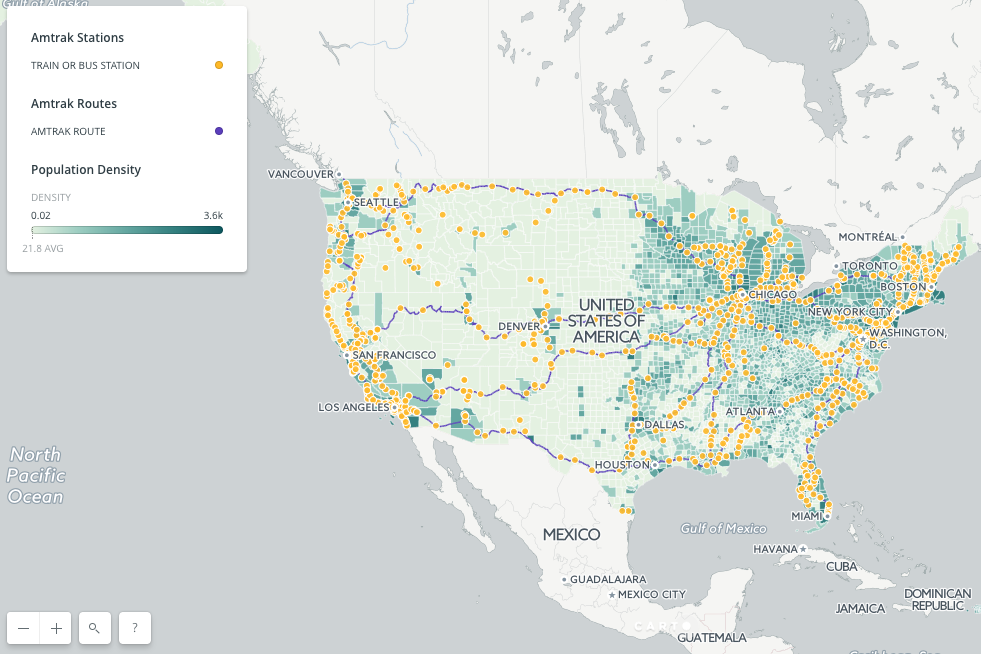

Introduction
Topics that we are particularly interested in are transportations and smart cities. With an emerging trend on American politics, we are concerned about the proposed funding cuts to transportation in Trump’s budget, which is currently the lowest in 18 years (source: New York Times).
The call for a 13% overall cut at the Department of Transportation will impact the ongoing development of smart cities and public transportations around the United States, such as Seattle’s decades-long effort to get a light rail system off the ground and the government’s multi-modal project, TIGER, to improve safety and economic opportunity all across the country. This concern motivates us to explore transportation patterns in the U.S. and study the impact of the budget cuts on the U.S. population.
We collected our data from reliable sources through census bureau, National Household Travel Survey (NHTS), and the U.S. government’s open data. Readers will be able to find the data in particular using the following links:
- Population Density - https://www.census.gov/geo/maps-data/data/tiger-data.html
- Census Data - https://www.census.gov/2010census/data/
- Household Income - https://catalog.data.gov/dataset?res_format=CSV&organization_type=State+Government&tags=population
- Commute Data - https://www.census.gov/hhes/commuting/data/commutingflows.html
- Flight Data - http://nhts.ornl.gov/download.shtml
- Train Data - https://catalog.data.gov/dataset/amtrak-rail-stations-national
Meet the Team
- Aditya Garg ag3741@columbia.edu
- Moorissa Meritseba Tjokro mmt2167@columbia.edu
- Will Connor Geary cg2111@columbia.edu
To explore transportation patterns, Aditya will be focusing on air transport (Flight Carrier and Air travel data), Moorissa on various modes of transportations on road such as cars/vans/truck/and public transportations specific to commute data, and Will on Amtrak/train data and populations dataset across the country.
We will map different plots on “before” and “after” budget cuts, discuss transportation patterns, and analyze how the decrease in funding will significantly impact the U.S. population. We will be using Python for data extraction and manipulation, and Processing, D3, Javascript/SVG/HTML/CSS, Carto and R libraries for visualizations.
Data Quality
What was most significant about the lunar voyage was not that man set foot on the Moon but that they set eye on the earth.
Executive Summary
The Department of Transportation (DOT) faces a $2.4 billion cut under President Trump's proposed federal budget blueprint — a surprising figure given Trump's pledges to improve U.S. infrastructure. The department's funding would be cut by 13 percent, to $16.2 billion, according to the proposal released early Thursday.

A Chinese tale tells of some men sent to harm a young girl who, upon seeing her beauty, become her protectors rather than her violators. That's how I felt seeing the Earth for the first time. I could not help but love and cherish her.
Analysis
According to Gizmodo Research Media Group (2017), the average commuter spends about an hour a day heading to and from work, but plenty spend as much as three hours commuting. Those hours spent in the car or public transportation have profound psychological and physical impacts on most US workforce population. Transportation plays an important role in people’s daily commute, so budget cut on city transportation not only will impact the city infrastructure but also people’s way of commuting. The commute rate can hence measure the impact of Trump’s budget cut on US population.
For the commute data from the County to County Commuting Flows 2016-2010 dataset of the census bureau, we have information on residence and place of work, each with state FIPS code, county FIPS code, state name, county name, metropolitan statistical area FIPS code, and area of county. With the provided commuting flow data, such as travel mode and workers in commuting flow, we calculated our commute rate by classifying the out-of-county commuters and taking its ratio with the number of total commuters.
We are interested in looking at the out-of-county commuting patterns as they provide a greater insight on the impact of Trump’s budget cut on transportation (e.g. the longer the commute distance, the more people are dependable on transportations). Many of the in-county transportation modes only captures walking distance, which in this case they might not be affected as much.
First, looking at the scatterplot below, there seems to be a relationship between in-county vs. out-of-county commuters. While most datapoints are clustered in the bottom left, we can see that the number of in-county commuters outnumbers the out-of-county commuters in every residential county. By taking the rate of the out-of-county commuters out of the total population, we see that the median is approximately 0.26. This commute rate would enable us to see the pattern of major commuters across nation.

The overall commute distribution from histogram below shows that majority rates for commuters who leave their county of residence for work fall within 20 percent and 30 percent range, with peak around 24 percent. This makes sense as the mean rate at 25 percent falls in the center of this range. This means that most regions in the United States have on average 25 percent workers who commute out of county. There is a sign of bimodality with a lower peak at 20 percent and distribution of data looks slightly left-skewed, with the median of 26 percent greater than its mean value.
This distribution represents an initial measure of commuting patterns, which would allow for comparing rate frequency after Trump’s budget cut. With the budget restriction on transportations, people might not be able to commute far away, which could result in a decrease in this commute rate.

Lets now take a look at distribution by travel modes from the following boxplot, where each datapoint represents a commuting flow from every county in the US. Majority of people use public transportation than cars, trucks, or vans. Other modes include bikes and motorcycles. While there are counties with higher number of car-driver population, majority of commuters in counties across the states depend on public transportation the most. This allows us to see how Trump’s budget cut would impact commuters nationwide.


Furthermore, based on our analysis using barplot below, we see that Virginia, Maryland, New Jersey, and Georgia (indicated by red bars) have over 40 percent residents leaving their home county to work daily. Modes of transportation recorded for these commuters are primarily car, van, truck, and public transportations.
Virginia, which leads the nation in residents who leave their home county to work, at over 51 percent, and Maryland, at 47 percent, have heavy emphasis on the Washington DC area and the federal employment complex. New Jersey is affected by nearby major job centers in Pennsylvania and New York; Georgia is affected by the major metropolitan multi-county, multi-state job complex that is Atlanta. Many of the areas with more than 30 percent leaving their residence county exhibit similar characteristics. We can see that the data illustrates the attractive power of major metropolitan areas.
Considering the case of Trump’s budget cut of $2.4 billion on public transportations, Virginia, Maryland, New Jersey, and Georgia, will be the most affected states as they have the highest rate of commuters. Public transportation areas will get more jammed due to its limited availability. More people will turn to other alternatives such as cars, hence traffic congestions in commute routes within these areas will get worse, whether it’s an out-of-state or in-state commute.
Breaking it down by the travel modes, for carpooling communities with cars, trucks, or vans, Virginia, Puerto Rico, Maryland, New Jersey, and Georgia are found to be the most impacted areas. Similarly, those who drove alone will also be the most impacted in these areas, but this time Puerto Rico leading the rate. While Puerto Rico and Virginia tend to always have the most number of out-of-county commuters, Louisiana made it in the top five outnumbering Alaska and New Jersey comes for the ‘other’ modes category.
Unsurprisingly enough, those who use public transportations for commute will have the most impact if they live in New Jersey, Virginia, Maryland, New York, and New Hampshire areas. It is also obvious that the commute rates are the highest for public transportation. This allows us to see how much impact Trump’s funding cut proposal will influence these top areas, especially those who use public transportation like buses and trains.

Codes for the commute data analysis can be found here.
flight analysis:
There can be no thought of finishing for ‘aiming for the stars.’ Both figuratively and literally, it is a task to occupy the generations. And no matter how much progress one makes, there is always the thrill of just beginning.
Amtrak Analysis
The White House's proposed budget would eliminate federal funding for Amtrak's national train routes, which would risk disconnecting 145 million people for whom these routes are the only nearby Amtrak service. It would eliminate $2.3 billion in funding that would have otherwise gone towards new commuter rail and light-rail projects, as well as $500 million in grants intended for investment in new national transit infrastructure (National Association of Railroad Passengers, 2017).
Understanding the geography behind these numbers is crucial for making sense of them. First, we need to understand where Amtrak routes and stations currently exist. The map below overlays the Amtrak network on top of a population density choropleth map, so we can get a sense for the scope of Amtrak's rail network and the density of the places that it serves.
While the static route map above is helpful for understanding the geographic scope of Amtrak's network, it doesn't tell us anything about the frequency of Amtrak's service. The geovisualization below, titled Amtrak Before and After Trump shows one week of Amtrak trips as they currently exist versus one week of Amtrak trips excluding the 15 national routes that are threatened by the White House's budget proposal. Routes on the chopping block include: Silver Star; Cardinal; Silver Meteor; Empire Builder; Capitol Limited; California Zephyr; Southwest Chief; City of New Orleans; Texas Eagle; Sunset Limited; Coast Starlight; Lake Shore Limited; Palmetto; Crescent; and the Auto Train. Noticeably, towns and cities in the Southeast and Midwest would be impacted the most, while large, coastal cities in the Northeast and on the West Coast would be impacted the least.
Next, let's focus on the stations that are at risk of being cut. The below dot distribution map titled Amtrak Stations at Risk displays each station that is at risk of being cut under the White House’s proposed budget. The size of each dot corresponds to the total number of passengers that each station saw in 2016 (including both departures and arrivals). The busiest stations at risk include: New Orleans; Denver; Orlando; Tampa; St. Paul-Minneapolis and Atlanta. The least busy stations at risk include: Sanderson, TX; Thurmond, WV; Alderson, WV; Lordsburg, NM; Montgomery, WV; South Portsmouth, KY. The ridership data comes from the National Association of Railroad Passengers’ Ridership Statistics portal.
There can be no thought of finishing for ‘aiming for the stars.’ Both figuratively and literally, it is a task to occupy the generations. And no matter how much progress one makes, there is always the thrill of just beginning.
The dreams of yesterday are the hopes of today and the reality of tomorrow. Science has not yet mastered prophecy. We predict too much for the next year and yet far too little for the next ten.
Spaceflights cannot be stopped. This is not the work of any one man or even a group of men. It is a historical process which mankind is carrying out in accordance with the natural laws of human development.
Conclusion
As we got further and further away, it [the Earth] diminished in size. Finally it shrank to the size of a marble, the most beautiful you can imagine. That beautiful, warm, living object looked so fragile, so delicate, that if you touched it with a finger it would crumble and fall apart. Seeing this has to change a man.
Space, the final frontier. These are the voyages of the Starship Enterprise. Its five-year mission: to explore strange new worlds, to seek out new life and new civilizations, to boldly go where no man has gone before.
As I stand out here in the wonders of the unknown at Hadley, I sort of realize there’s a fundamental truth to our nature, Man must explore, and this is exploration at its greatest.